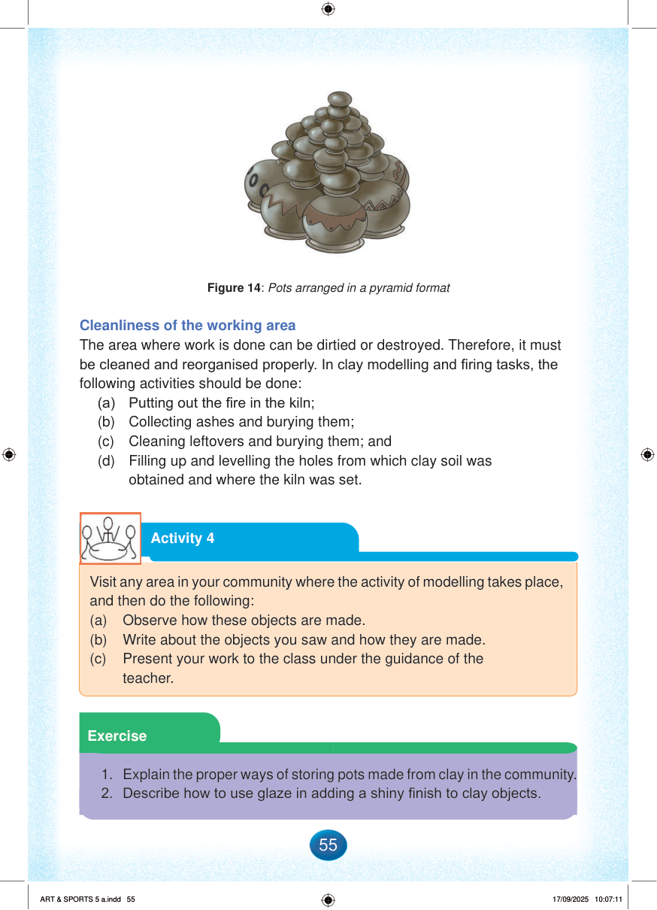

Pots arranged in a pyramid format
Figure 14: Pots arranged in a pyramid format
Cleanliness of the working area
The area where work is done can be dirtied or destroyed.
Therefore, it must be cleaned and reorganised properly.
In clay modelling and firing tasks, the following activities should be done:
(a)
Putting out the fire in the kiln;
(b)
Collecting ashes and burying them;
(c)
Cleaning leftovers and burying them; and
(d)
Filling up and levelling the holes from which clay soil was obtained and where the kiln was set.
Activity 4
Visit any area in your community where the activity of modelling takes place, and then do the following:
(a)
Observe how these objects are made.
(b)
Write about the objects you saw and how they are made.
(c)
Present your work to the class under the guidance of the teacher.
Exercise
1.
Explain the proper ways of storing pots made from clay in the community.
2.
Describe how to use glaze in adding a shiny finish to clay objects.